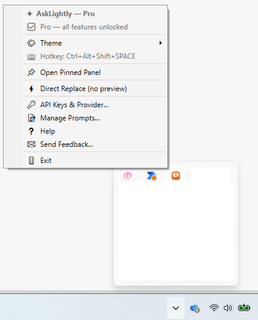
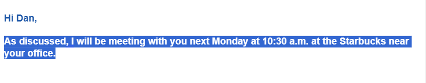
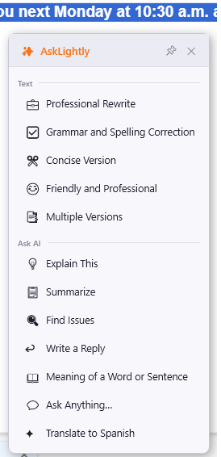
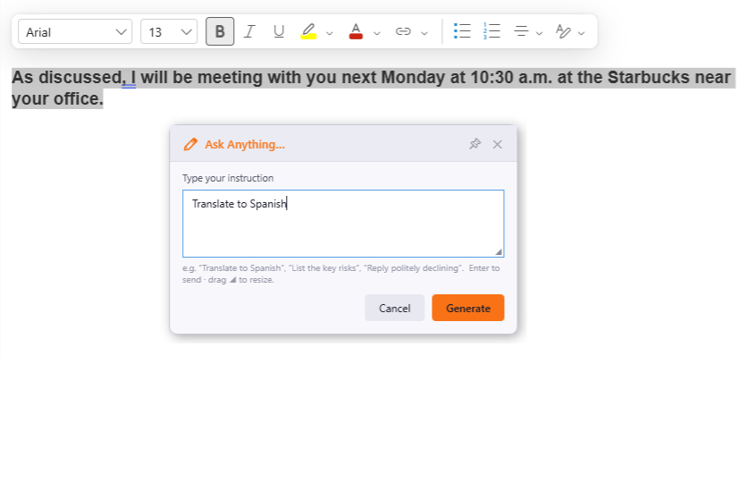
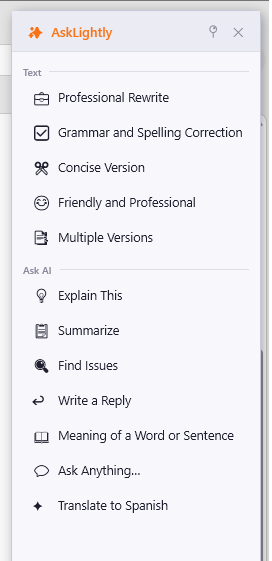
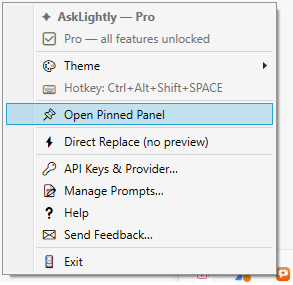
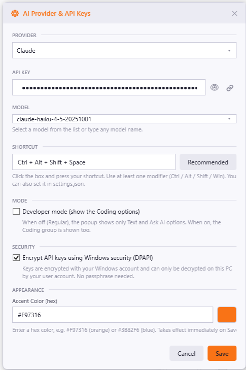
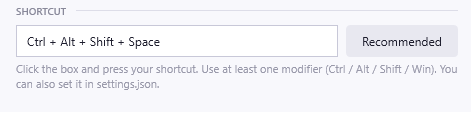

AI on any text or code, in any app — with one hotkey.

1 · Find the orange icon in the system tray

3 · Select text anywhere, then press your shortcut
Select text, press the shortcut, and this appears next to your cursor. Options are grouped:
All options are available to use — nothing is locked. Add your own from 📝 Manage Prompts….

The popup, grouped into Text and Ask AI

Type any request; it runs on your selected text
The built-in 💬 Ask Anything… option lets you type any instruction on the fly — “Translate to Spanish”, “List the key risks”, “Rewrite as a tweet”, “What does this code do?”
Your instruction is applied to whatever text you selected, so you never have to paste anything. Press Enter to send.
Click the 📌 button in the popup header (or tray → 📌 Open Pinned Panel) to dock AskLightly to the side of your screen as an always-available launcher.
While pinned, it stays open and re-captures whatever text you have selected each time — so you can go through a document paragraph by paragraph. Each result opens in its own window. Click 📍 to unpin.

Docked to the screen edge, stays open

Right-click the tray icon
| Item | What it does |
|---|---|
| 🎨 Theme | Switch Dark / Light |
| 📌 Open Pinned Panel | Open the docked launcher |
| ⚡ Direct Replace | Skip the preview and paste immediately |
| 🔑 API Keys & Provider… | Keys, provider, model, shortcut, key encryption |
| 📝 Manage Prompts… | Add / edit / delete your options |
| ✉ Send Feedback… | Email feedback to the developer |
| 🚪 Exit | Quit AskLightly |
Open 🔑 API Keys & Provider… to set everything up:

Provider, key, model, and shortcut — all in one window

The shortcut picker — just press your keys, no typing codes
Every feature in AskLightly is available to you — all the built-in options, custom prompts, the pinned panel, every AI provider and model, Direct Replace, themes, and key encryption. There is nothing locked and nothing to buy.
You only ever pay your AI provider for what you use, with your own API key. AskLightly itself takes no cut and has no subscription.
AskLightly only ever works on text you've highlighted — by design, it never reads a whole page on its own. Select some text first, then press the shortcut.
Almost always, that app is running as Administrator. Windows does not allow a normal app to read selections from an elevated one — a security rule that stops other programs from controlling apps with admin rights. This usually shows up with Visual Studio, terminals, or editors started with Run as administrator.
How to check: look at that app's title bar. If it ends with (Administrator), that's the cause.
How to fix it: close the app, then right-click its shortcut → Properties → Compatibility and untick Run this program as an administrator. (A pinned taskbar icon keeps its own copy of that setting, so check there too.) Start it again and AskLightly will work in it.
AskLightly cannot work around this, and that is deliberate on Windows' part.
If the app is not running as Administrator and AskLightly still can't pick up your selection — often reporting “No text selected” even though text clearly is selected — the cause is usually your organization's security or data-protection policy rather than AskLightly.
On a managed or company-issued computer, IT commonly deploys tools that deliberately restrict copying text out of certain applications. Common examples:
AskLightly reads your selection by asking the app to copy it, exactly as pressing Ctrl+C would. So a good test is to select the text and press Ctrl+C yourself, then try pasting it into Notepad. If that comes up empty, the block is coming from your organization's policy, not from AskLightly — and nothing in the app can or should override it. Use AskLightly in a different app, or speak to your IT team if you believe the restriction is a mistake.
Another app may already use that combo. Set a conflict-free one in Settings → SHORTCUT — the Recommended button picks Ctrl+Alt+Shift+A, which almost never clashes.
Press Ctrl+Z in the app to undo, like any edit. To always preview first, keep Direct Replace off. To only ever answer (never replace), use Ask AI options.
A safety limit prevents sending an entire page by accident — select a smaller portion.
When you use an option, the text you selected is sent to the AI provider you chose (Claude / Gemini / OpenAI / DeepSeek / Grok) to do the work — and nowhere else. AskLightly has no server of its own, uses your own API key, and only reads text you deliberately select. See the full privacy policy.